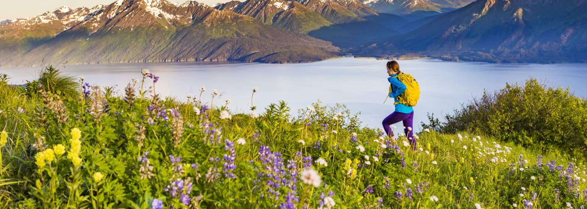
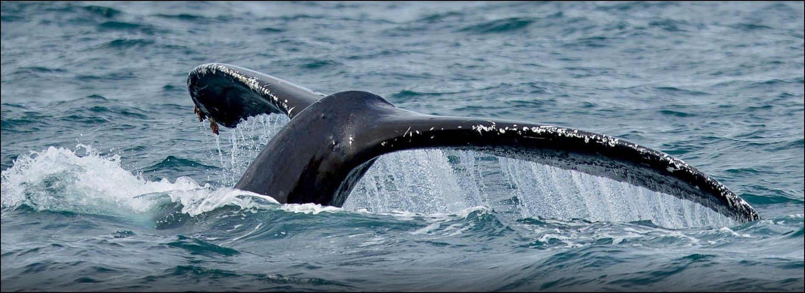

Alaska Facts
Alaska, known as the Last Frontier, is a land of wonder and natural beauty. Here are some intriguing facts about this remarkable state:
- Alaska is the largest state in the United States, covering over 663,000 square miles.
- Denali, also known as Mount McKinley, is the highest peak in North America and resides within Alaska's boundaries.
- The Northern Lights, also called the Aurora Borealis, can be seen in the Alaskan night skies during winter.

Anchorage
Set against a backdrop of mountains and the Cook Inlet, Anchorage harmonizes urban living with boundless outdoor exploration.

Juneau
Huddled along the Gastineau Channel, Juneau, the capital city, weaves history, natural beauty, and artistic expression into a unique tapestry.

Skagway
Echoes of the Klondike Gold Rush resonate through Skagway's well-preserved avenues, nestled amidst awe-inspiring fjords and mountains.
Resources
- A. (2023). Skagway Sled Adventure Mushers Camp [Photograph]. https://uploads.alaska.org/suppliers/activities/A/alaskaX/skagway-sled-dog-adventure-mushers-camp/_333x222_crop_center-center_65_none/Moira-Finn-SGY-Mushers-38_220121_163613.jpg
- A. (2023, August 16). Visit Skagway. Retrieved August 16, 2023, from https://www.alaska.org/destination/skagway#related-advice
- DeYoung, M. (2023). Anchorage Alaska [Photograph]. https://www.anchorage.net/things-to-do/
- Kaufman, B. (2023). Anchorage Aerial Alaska [Photograph]. https://uploads.alaska.org/destinations/anchorage/heros/_1800xAUTO_crop_center-center_65_none/anchorage-aerial-alaska-Alaska-Channel.jpg
- M. B. (2023). Photo of White Pass Yukon Route Railway [Photograph]. Microsoft Bing. https://bing.com/th?id=OSGI.EDF33C1F9934BD3B73ABFC2DE6A33F80&h=1000&w=1920&c=1&rs=1&o=3"
- U. C. B. (2021, January 1). Quick Facts Alaska. United States Census Bureau. Retrieved August 15, 2023, from https://www.census.gov/quickfacts/fact/table/AK/PST045222
- Walsh, P. (2023). Whale Watching [Photograph]. https://www.alaska.org/things-to-do/whale-watching
- (2023, August 16). Visit Anchorage Alaska. Visit Anchorage Alaska. Retrieved August 16, 2023, from https://www.anchorage.net/
- (2023, August 16). Discover Juneau. Travel Juneau. Retrieved August 16, 2023, from https://www.traveljuneau.com/discover-juneau/about-our-town/
{kind=link}
{kind=link}